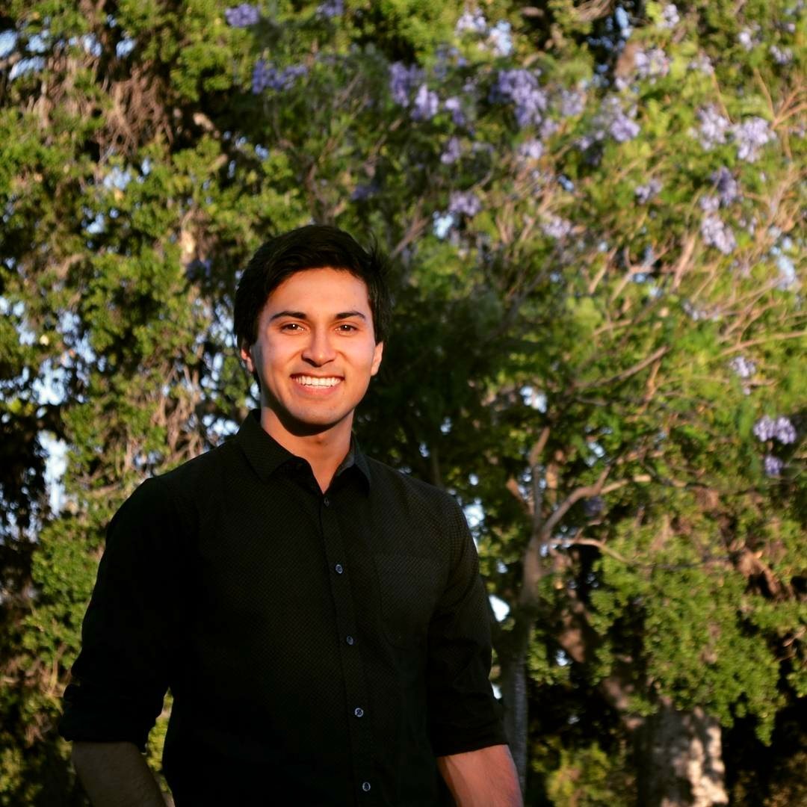

About Me
I am currently a student at the coding bootcamp at UCLA Extension. I joined the program because I believe it is an opportunity to develop my skills, expand my opportunities, and contribute to the world around me. I aspire to change fields from my current line of work in human resources to the more dynamic field of web developer or possibly software engineering. I intend to continue my education in computer science after I complete this bootcamp. For me this is the beginning, a launching pad from which I will achieve my life goals.
Outside of the bootcamp I am a former competitive gymnast and avid mountain climber. I competed in gymnastics for ten years beginning at the age of twelve. While studying at UCLA I formed the UCLA Club Gymnastics Team with two of my classmates and competed with a team I had supported and grown throughout my years in undergrad. After graduating, I began hiking regularly, which evolved over time into mountaineering. This year I successfully completed a Winter summit of Mt. Whitney, the tallest mountain in California and the contiguous U.S.
Connect with Me